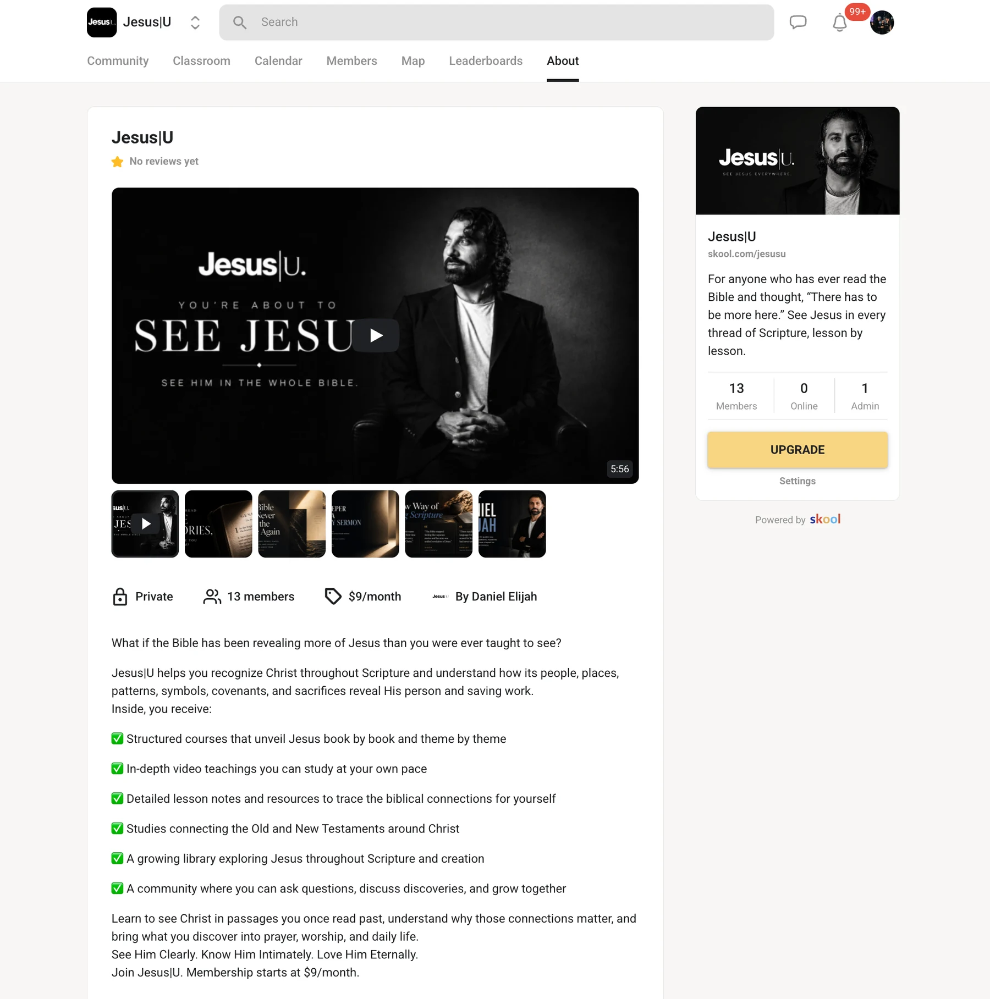
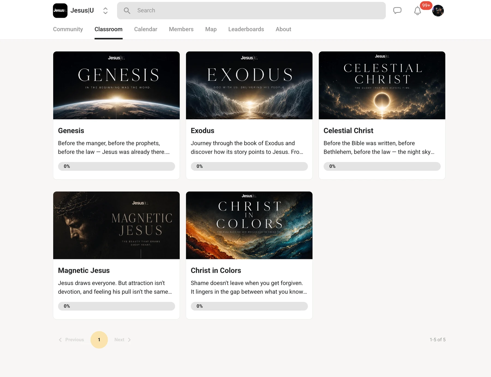

Offer
What exactly is being sold, to whom, and why now?
01 / THE OFFER EXISTS. THE EXPERIENCE NEEDS TO CATCH UP.
For expert-led launches where the offer already exists but the buyer-facing experience still feels fragmented, I carry the commercial argument from diagnosis through page, build and the primary path to act.
Books · courses · memberships · cohorts · expert-led offers

20 From 20 had to hold authority, story, product choice and purchase together without making the buyer assemble the logic for themselves.
A strong offer can still feel ordinary when its message, proof, design and transaction path were solved in different rooms. The Sprint keeps the buyer-facing decisions under one commercial logic.
What exactly is being sold, to whom, and why now?
What must the buyer understand before the decision makes sense?
How should the proof, hierarchy and visual world make that argument perceptible?
What is the one next step, and does the path actually work?
Preflight happens before Day 1. Once the offer, evidence, assets and required access are ready, the production target is five business days from decision map to launch QA.
Lock the buyer, offer, proof, objections, page architecture and primary action.
DECISION MAPBuild or substantially refine the commercial narrative, primary copy and CTA logic.
MESSAGE SYSTEMTranslate the argument into a custom visual world with deliberate hierarchy and proof behavior.
ART DIRECTIONImplement the responsive sales page and connect the agreed primary action path.
WORKING BUILDConsolidated review, responsive QA, link/form checks, metadata and launch handoff.
LAUNCH READYJesus|U shows the other side of the work: structuring a digital product so its offer, visual world, content architecture and member experience belong together.
This is broader systems proof. Course-platform architecture and post-purchase delivery are not part of the standard Launch-Ready Sprint unless separately scoped.
View live project

Five days is a production target, not a promise to rebuild an entire business ecosystem before Friday.
FIXED FEE / STANDARD SCOPE
One offer. One buyer-facing launch experience. One accountable operator from diagnosis through launch QA.
I do not guarantee revenue, conversion rate or audience response. I do take responsibility for the agreed work. Material implementation defects attributable to my work are corrected without additional charge.
The questions worth answering before money changes hands.
Give me enough context to see whether the buyer-facing experience is actually the weak link. If it is, I will tell you what I would address. If it is not, I will tell you that too.
I have the launch context. If the Sprint is the right intervention, the next step is to confirm scope and a start window.